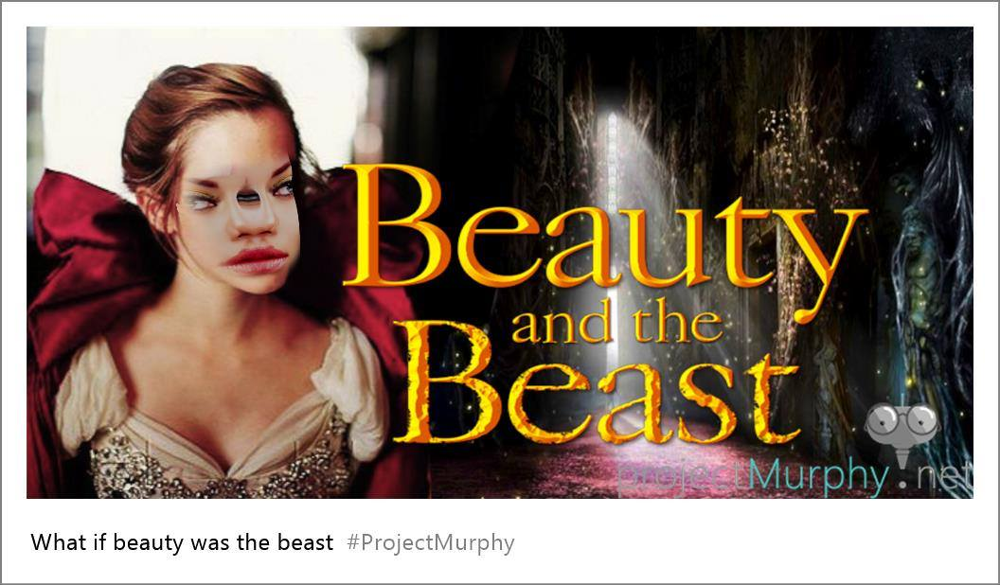

What If Beauty Was the Beast?

Related posts

Here is a recent picture of me. This is what I look like now.
Dear Mom and Dad, As you know, I moved far away. The town I live in now doesn’t have duck…

What is the Difference Between a City and a Town?
A man once asked me what is the difference between a city and a town? A city is bigger I…

What If Gandhi Was Rambo??
All photos created by Murphy Bot based on EMToast’s questions.

Art of the Folked: Cherry Cheeks Beauty &; Smiling Virgin
Cherry Cheeks Beauty - By Micheloebangelo The Smiling Virgin – By Micheloebangelo